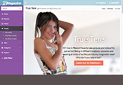
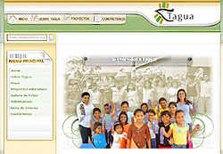
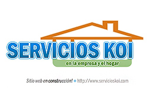
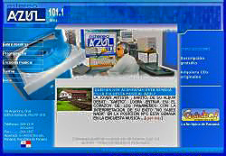
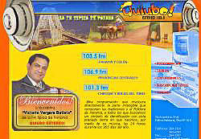
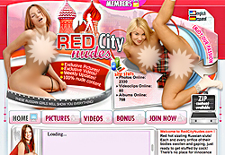
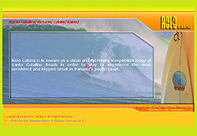
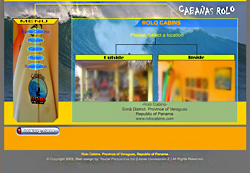

Lionso Concepcion Zambrano
- edad
- 31 años
- cédula
- 8-766-2176
- teléfono
- 66286249
- lionso.czgmail.com
Resumen
Experiencia
WontonMedia
Diseñador / Programador Web
may 2008 - mar 2015
Mexico - Panama
Mexico - Panama
- Mantenimiento de los websites y scripts desarrollados por otros clientes internos.
- Diseño de sitios responsivos ( Responsive web design ), empleando los frameworks Bootstrap y Foundation.
- Desarrollo de aplicaciones web para administrar contenido multimedia ( CMS )
- Desarrollo de aplicaciones Web para administrar programas de afiliados.
Two Dogs Media
Diseñador / Programador Web
dic 2004 - may 2008
Panama
Panama
- Diseñador Web: Empleando Adobe Photoshop y la posterior conversion/edición de HTML desarrollé sitios de entretenimiento para adultos así como otros medios de promoción( banners, galerias,... ) para generar tráfico hacia estos. De igual forma editaba fotos de modelos en grandes volúmenes.
- Programador Web: Por medio de la conocida plataforma open-source web LAMPP ( Linux, Apache, MySQL y PHP ) estuve a cargo de desarrollar y mantener aplicaciones web de las cuales dependian los sitios de pago, tales como: soluciones GEO-IP, procesadores de pagos, CMS ( sistema de administración de contenidos ), monitoreo/tracking de afiliados y de soporte para clientes externos.
Estudios
Universidad Santa Maria La Antigua
(Facultad de Ciencias Administrativas)
(Facultad de Ciencias Administrativas)
Licenciatura en Turismo (Graduado)
ene 2001 - sep 2007
Panama
Panama
Instituto Fermin Naudeau
Bachiller en Ciencias (Graduado)
feb 1995 - dic 2000
Panama
Panama
Conocimientos adicionales Mayor de 90% de uso
- Idioma Inglés
- Intermedio
- Lenguages de programacion web
- PHP
- PHP frameworks
- Kohana, Synfony
- Template Engines
- Smarty, Twig
- Bases de datos relacionales
- MySQL, sqlite
- Servidores web
- Apache, Nginx
- Librerias de Javascript
- jQuery, MooTools
- "Responsive web design" frameworks
- Bootstrap, Foundation
- Sistemas para control de versiones
- Git
- Hardware
- Montaje/Desmontaje de computadoras y smartphones
Portafolio Selección de 100% de desarrollo
Esta selección solo destaca los sitios en donde he estado
a cargo desde el wireframe, diseño,
maquetación y programación en php (donde sea aplicable) es decir al 100% del producto final

Sitio de multi modelos
Fecha: 2014
Hostal para surfers v3
Fecha: 2008

Centro de Capacitación Profesional (ONG)
Fecha: 2006

Servicios de limpieza general
Fecha: 2008

Emisora radial
Fecha: 2004

Emisora radial
Fecha: 2004Sitio de envio de galerias
Fecha: 2007

Sitio de multi modelos de Rusia
Fecha: 2006

Hostal para surfers v2
Fecha: 2004
